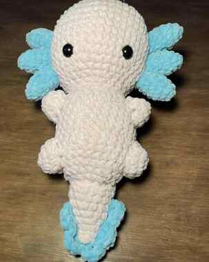

Mijn werk
Hier een aantal projecten waar ik me de afgelopen paar maanden mee bezig heb gehouden. Ik ben nu bijna een jaar geleden begonnen, en merk zelf dat ik in die tijd al veel ontwikkeling ben ondergaan en verbeteringen in mijn werk heb gemaakt.
